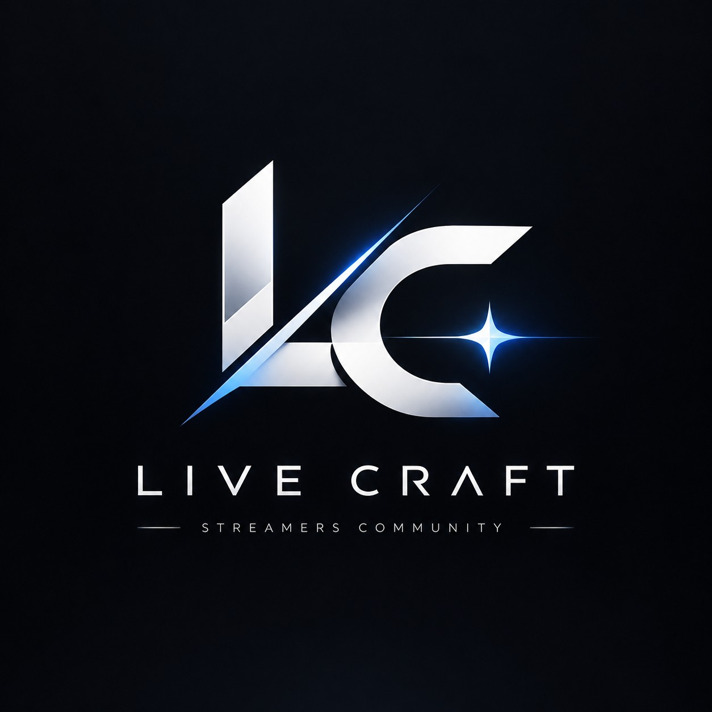

STREAMERS × CREATIVITY × GROWTH
配信を、
もっと良いものへ。
一人では気づけない可能性を、仲間とともに。
Live Craftは、配信者同士が学び、磨き合い、それぞれの理想の配信を目指すコミュニティです。

OUR PHILOSOPHY
成長の形は、
一つじゃない。
配信の面白さも、理想の形も、人それぞれ。Live Craftは誰かのやり方に合わせる場所ではありません。それぞれの個性を活かしながら、より良い配信に向かうための場所です。
01 / LEARN
学び合う
機材・配信技術・企画の工夫など、経験を持ち寄り、新しい発見を生み出す。
02 / CREATE
つくり合う
新しい企画やコラボを通じて、一人ではできなかった挑戦を形にする。
03 / RESPECT
尊重し合う
互いのスタイルを認め、フィードバックも参加も本人の意思を大切にする。
WHAT WE DO
配信を磨く、
4つのアクティビティ。
参加を強制する活動はありません。興味や今の課題に合わせて、自由に関わることができます。
配信研究会
OBS、音声、企画、トークなどテーマを決めて学び合います。
フィードバック
希望者が配信を振り返り、良い点や改善案を共有します。
コラボ・企画
ジャンルを越えてアイデアを出し合い、新しい表現に挑戦します。
交流・情報共有
Discordで気軽に相談し、ノウハウを積み重ねます。
THE PEOPLE OF LIVE CRAFT
それぞれの個性が、
コミュニティをつくる。
配信ジャンルも、得意なことも、人それぞれ。自分の配信を磨きながら、仲間を刺激し合うメンバーを紹介します。
所属メンバーを見る